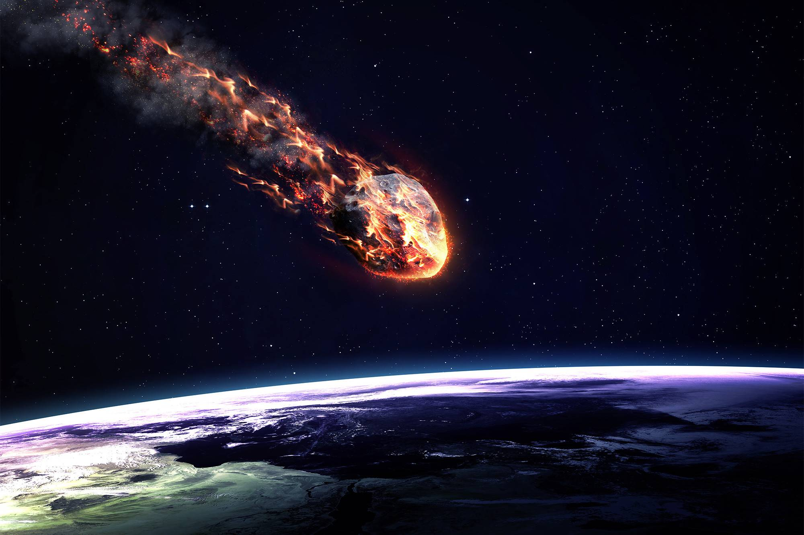

Что такое метеориты?
Метеориты — это космические объекты, которые попадают на поверхность Земли. Они могут иметь различные размеры и состав, исследование которых помогает ученым лучше понять происхождение и развитие нашей планеты.
Интересные факты
Самый большой метеорит
Самый большой метеорит, который когда-либо упал на Землю, весил около 60 тонн!
Уникальная структура
Метеориты имеют уникальные структуры и составы, которые могут включать драгоценные металлы и минералы.
Изучение метеоритов
Ученые изучают метеориты, чтобы раскрывать тайны происхождения солнечной системы и формирования планет.
Типы метеоритов
Существует несколько типов метеоритов, включая железные метеориты, каменные метеориты и метеориты из никеля-железа. Каждый из них имеет свои характеристики и особенности состава.
Цитата
"Метеориты - это окна в прошлое нашей солнечной системы."
Изображение метеорита
